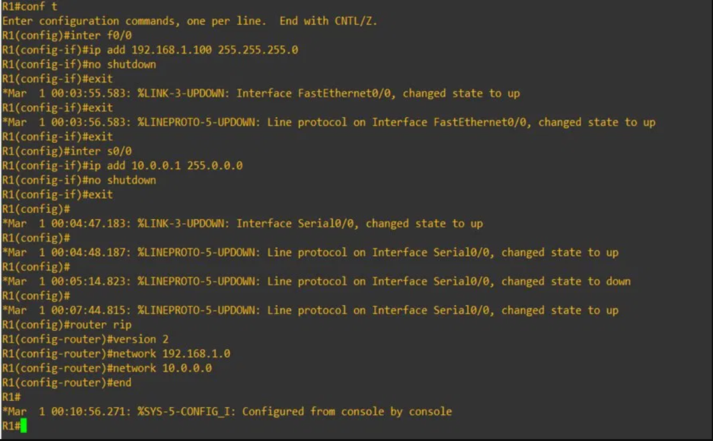
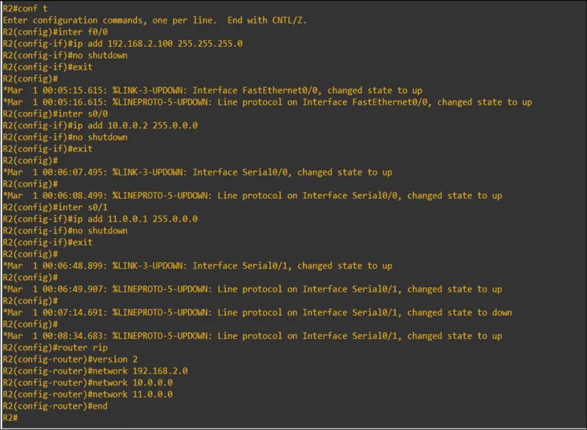
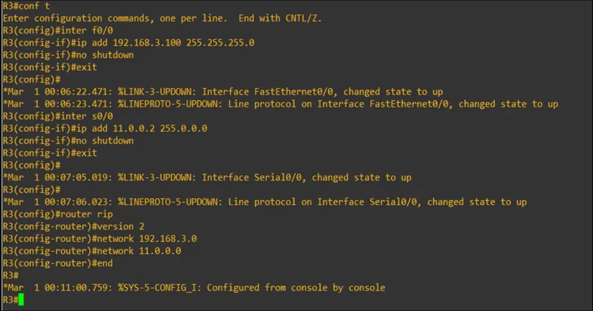
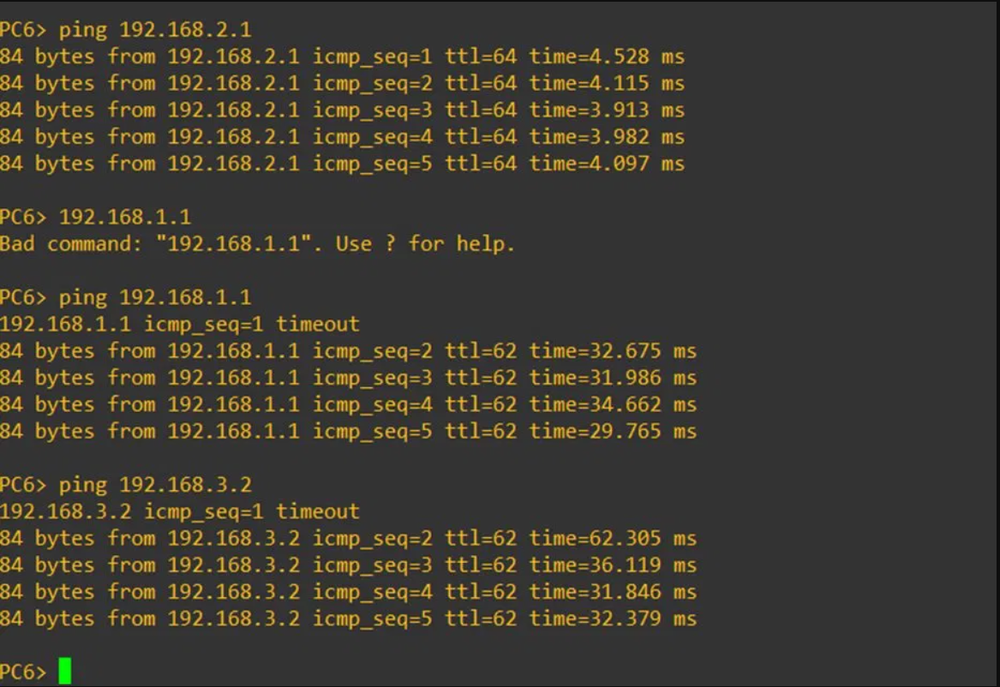
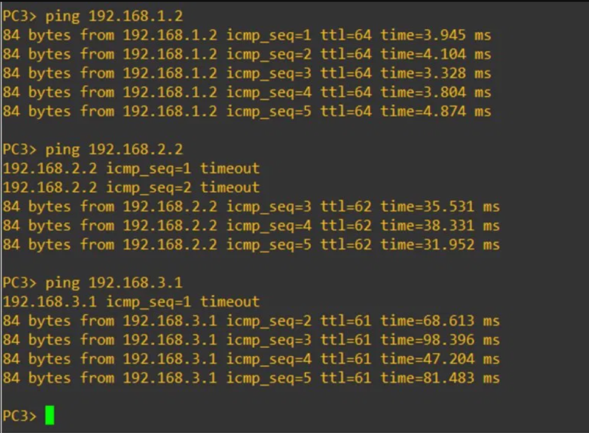

Accueil › Réseau › Routage › RIPv2 (Dynamique)
RIPv2 – Routage Dynamique sur GNS3
Objectif
Ce TD conclut la série sur le routage dynamique avec RIPv2 (Routing Information Protocol version 2). C'est le plus ancien des protocoles de routage dynamique encore utilisés. Sa configuration est la plus simple de tous les protocoles étudiés, mais il présente des limitations importantes qui expliquent pourquoi OSPF et EIGRP lui sont préférés en entreprise.
📖 Concepts clés RIPv2
- Protocole à vecteur de distance : chaque routeur partage sa table de routage complète avec ses voisins directs (toutes les 30 secondes)
- Métrique = nombre de sauts (hop count) : maximum 15 sauts — au-delà, le réseau est considéré inaccessible
- RIPv2 vs RIPv1 : RIPv2 supporte le VLSM (masques variables) et l'authentification — RIPv1 est classful uniquement
- Convergence lente : les mises à jour périodiques (30s) ralentissent la convergence comparé à OSPF/EIGRP
- Syntaxe :
router rip+version 2+network— la plus simple des trois protocoles
⚠️ Limitation principale : RIPv2 est limité à 15 sauts maximum. Pour des réseaux d'entreprise étendus, OSPF ou EIGRP sont systématiquement préférés. RIPv2 reste utile pour les petits réseaux et comme base pédagogique.
Bilan des 3 protocoles de routage dynamique
| Critère | RIPv2 | EIGRP | OSPF |
|---|---|---|---|
| Type | Vecteur de distance | Hybride | État de lien |
| Métrique | Sauts (max 15) | BW + délai | Coût (BW) |
| Convergence | Lente (30s) | Très rapide | Rapide |
| Standard | Ouvert | Cisco only | Ouvert (RFC) |
| Syntaxe config | La plus simple | Simple | Modérée |
| Scalabilité | Faible | Élevée | Très élevée |
| Commande clé | router rip / version 2 |
router eigrp [AS] |
router ospf 1 |
Topologie du réseau
ℹ️ Même topologie que tous les TDs de routage. Voir Routage Statique pour le schéma complet.
Configuration des routeurs
1Configuration de R1 – Interfaces + RIPv2

2Configuration de R2 – Routeur central RIPv2

3Configuration de R3 – RIPv2

4Tests de connectivité
Tests depuis PC6 (réseau R2) et PC3 (réseau R1) vers les autres réseaux :


🏁 Bilan de la série Routage
Ces 5 TDs couvrent l'ensemble des approches de routage sur Cisco IOS :
- Routage Statique — configuration manuelle complète
- Routage par Défaut — route "joker" 0.0.0.0/0
- OSPF — standard ouvert, algorithme SPF, Area 0
- EIGRP — protocole Cisco, algorithme DUAL, AS
- RIPv2 — le plus simple, mais limité à 15 sauts
✅ Ce que j'ai appris
- Configurer RIPv2 avec
router rip+version 2— syntaxe la plus concise des 3 protocoles - Comprendre la limite des 15 sauts et son impact sur la scalabilité
- Distinguer RIPv1 (classful, pas de VLSM) de RIPv2 (classless, supporte VLSM)
- Comparer les 3 protocoles dynamiques sur critères : convergence, scalabilité, standard, métrique
- Choisir le bon protocole selon le contexte : RIPv2 (petits réseaux), EIGRP (réseaux Cisco), OSPF (multi-constructeur)